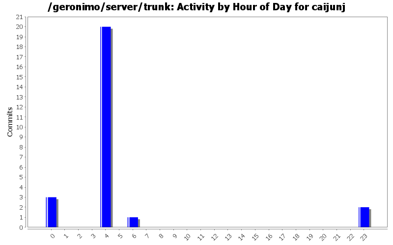
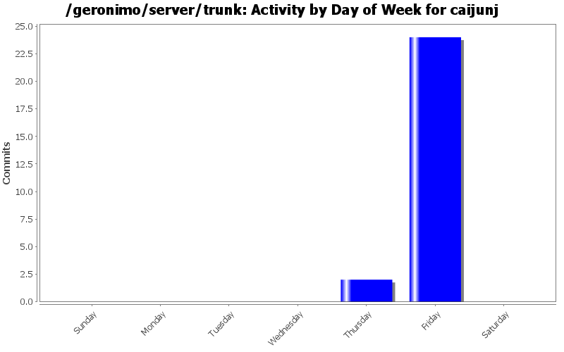
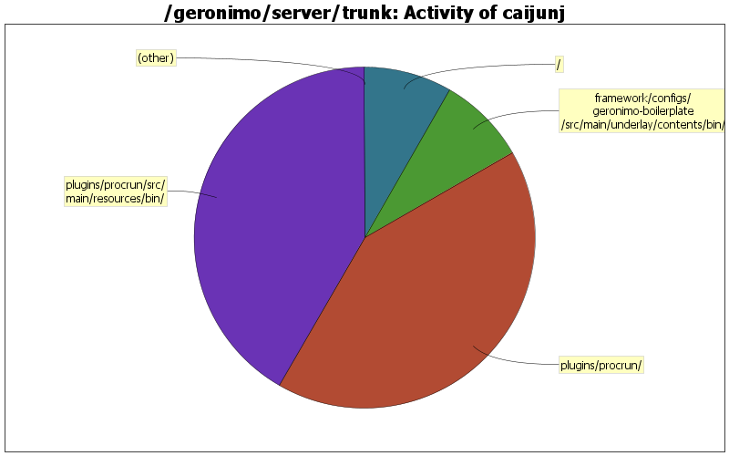

| Directory | Changes | Lines of Code | Lines per Change |
|---|---|---|---|
| Totals | 26 (100.0%) | 12 (100.0%) | 0.4 |
| plugins/procrun/src/main/resources/bin/ | 4 (15.4%) | 5 (41.7%) | 1.2 |
| plugins/procrun/ | 1 (3.8%) | 5 (41.7%) | 5.0 |
| framework/configs/geronimo-boilerplate/src/main/underlay/contents/bin/ | 18 (69.2%) | 1 (8.3%) | 0.0 |
| / | 1 (3.8%) | 1 (8.3%) | 1.0 |
| plugins/jaxws/jaxws-tools/src/main/resources/contents/bin/ | 2 (7.7%) | 0 (0.0%) | 0.0 |

GERONIMO-5159 - Add pause when startup.bat fails on Windows
1 lines of code changed in 2 files:
Upgrade Commons Daemon Procrun from customized 1.0.1 to unmodified 1.0.2 release
5 lines of code changed in 3 files:
GERONIMO-4968 - Problemastic OS check in Windows startup command: clean up more OS check
0 lines of code changed in 1 file:
GERONIMO-4694 - Upgrade to Derby 10.5.3.0
1 lines of code changed in 1 file:
GERONIMO-4968 - Problemastic OS check in Windows startup command
0 lines of code changed in 18 files:
GERONIMO-5032 - Procrun issue: windows service is stoped when user log off console session. Thanks Forrest for the patch
5 lines of code changed in 1 file: